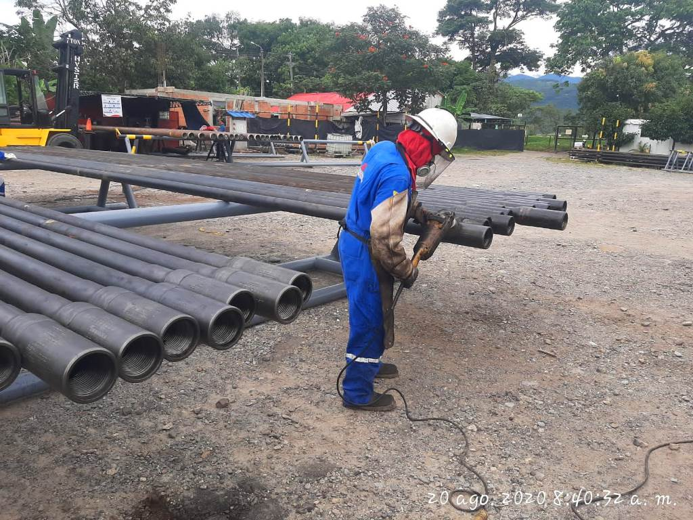

DRILLPIE
¿Que es un DRILLPIE
El Drill Pipe consiste en tubería de acero sin empates, siendo formando parte de la sarta de perforación, de la cual es su más numeroso componente. Por lo general, entre el 90 y 95% de la longitud total de una sarta esta compuesta de Drillpipe.
